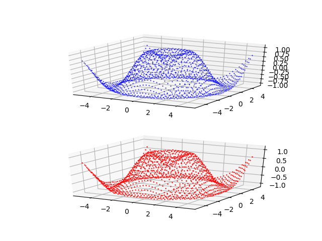

Approssimazione di una funzione reale di due variabili con PyTorch
Questo post fa parte di una serie di post sull'approssimazione di oggetti matematici (funzioni, curve e superfici) tramite una rete neurale di tipo MLP (percettrone multistrato, dall'inglese Multi-Layer Perceptron);
per una introduzione sull'argomento si veda il post Approssimazione con percettroni multistrato altamente configurabili.
L'argomento di questo post è l'approssimazione di una funzione reale continua e limitata a valori reali di due variabili reali vincolata in un rettangolo $$f(x,y) \colon [a,b]\times[c,d] \to \rm I\!R$$ con un MLP
in modo che l'utilizzatore possa testare diverse combinazioni di architettura MLP, funzioni di attivazione, algoritmo di addestramento e funzione di loss senza scrivere codice ma agendo solamente sulla linea di comando di quattro script Python
che implementano separatamente le funzionalità di:
- Creazione dei dataset
- Definizione dell'architettura del MLP + Addestramento
- Predizione
- Visualizzazione del risultato
Per ottenere il codice si veda il paragrafo Download del codice completo in fondo a questo post.
Lo stesso identico meccanismo è stato realizzato usando la tecnologia TensorFlow 2 (con Keras); si veda il post Approssimazione di una funzione reale di due variabili con TensorFlow pubblicato sempre su questo sito web.
Se si fosse invece interessati alla regressione di una funzione reale di due variabili con tecniche di machine learning si veda il post Approssimazione di funzioni tramite un regressore XGBoost configurabile.
Creazione dei dataset
Scopo del programma Python fxy_gen.py
è di generare i dataset (di training e/o di test) da utilizzare nelle fasi successive;
prende in linea di comando la funzione a due variabili da approssimare (in sintassi lambda body), il sottoinsieme rettangolare del dominio (specificando tramite due intervalli i due lati del rettangolo) e passo di discretizzazione
e genera il dataset in un file nel formato csv applicando la funzione al rettangolo passato.
Il file csv in uscita ha infatti tre colonne (senza header): le prime due colonne contengono i valori delle due variabili indipendenti $x$ e $y$ nel rettangolo desiderato con il passo di discretizzazione specificato;
la terza colonna contiene i valori della variabile dipendente, ovverosia i valori della funzione $f(x,y)$ corrispondenti al valore di $x$ e di $y$ delle prime due colonne.
Per ottenere l'usage del programma è sufficiente eseguire il seguente comando:
$ python fxy_gen.py --helpusage: fxy_gen.py [-h]
-h, --help show this help message and exit
--dsout DS_OUTPUT_FILENAME dataset output file (csv format)
--fxy FUNC_X_BODY f(x,y) body (body lamba format)
--rxbegin RANGE_BEGIN begin x range (default:-5.0)
--rxend RANGE_END end x range (default:+5.0)
--rybegin RANGE_BEGIN begin y range (default:-5.0)
--ryend RANGE_END end y range (default:+5.0)
--rstep RANGE_STEP step range (default: 0.01)Un esempio di uso del programma fxy_gen.py
Si supponga di voler approssimare nel rettangolo $[-5.0,5.0]\times[-5.0,5.0]$ la seguente funzione $$\sin \sqrt{x^2 + y^2}$$, Tenendo presente che np è l'alias della libreria NumPy, questa si traduce in sintassi lambda body Python così:
np.sin(np.sqrt(x**2 + y**2))$ python fxy_gen.py \
--dsout mytrain.csv \
--fxy "np.sin(np.sqrt(x**2 + y**2))" \
--rxbegin -5.0 \
--rxend 5.0 \
--rybegin -5.0 \
--ryend 5.0 \
--rstep 0.075$ python fxy_gen.py \
--dsout mytest.csv \
--fxy "np.sin(np.sqrt(x**2 + y**2))" \
--rxbegin -5.0 \
--rxend 5.0 \
--rybegin -5.0 \
--ryend 5.0 \
--rstep 0.275Definizione dell'architettura del MLP + Addestramento
Scopo del programma Python fxy_fit.py
è, in accordo con i parametri passati in linea di comando, creare dinamicamente un MLP ed effettuare il suo addestramento.
Per ottenere l'usage del programma è sufficiente eseguire il seguente comando:
$ python fxy_fit.py --helpusage: fxy_fit.py [-h]
--trainds TRAIN_DATASET_FILENAME
--modelout MODEL_PATH
[--epochs EPOCHS]
[--batch_size BATCH_SIZE]
[--hlayers HIDDEN_LAYERS_LAYOUT [HIDDEN_LAYERS_LAYOUT ...]]
[--hactivations ACTIVATION_FUNCTIONS [ACTIVATION_FUNCTIONS ...]]
[--optimizer OPTIMIZER]
[--loss LOSS]
[--device DEVICE]Un esempio di uso del programma fxy_fit.py
Si supponga di avere a disposizione un dataset di training (ad esempio generato tramite fxy_gen.py come mostrato nel paragrafo precedente)
e si voglia che il MLP abbia due layer nascosti entrambi con 100 neuroni e che si voglia usare la funzione di attivazione ReLU in uscita da tutti e tre i layer;
inoltre si vogliano eseguire 10 epoche di training con un batch size di 50 elementi usando l'algoritmo di ottimizzazione SGD con learning rate pari a 0.01,
con il momentum a 0.9, il decay a 10-6 e il flag nesterov a true e infine la MSELoss quale funzione di loss.
Per mettere in azione tutto questo si esegua il seguente comando:
$ python fxy_fit.py \
--trainds mytrain.csv \
--modelout mymodel.pth \
--hlayers 100 100 \
--hactivations 'ReLU()' 'ReLU()' \
--epochs 10 \
--batch_size 50 \
--optimizer 'SGD(lr=0.01, weight_decay=1e-6, momentum=0.9, nesterov=True)' \
--loss 'MSELoss()'mymodel.pth conterrà il modello del MLP addestrato sul dataset mytrain.csv secondo i parametri passati in linea di comando.
Predizione
Scopo del programma Python fxy_predict.py
è quello di applicare il modello di MLP generato tramite fxy_fit.py al dataset di test (ad esempio generato tramite fxy_gen.py come mostrato in un paragrafo precedente);
l'esecuzione del programma produce in uscita un file csv con tre colonne (senza header): le prime due colonne contengono i valori delle variabili indipendenti $x$ e $y$ presi dal dataset di test
e la terza colonna contiene i valori predetti della variabile dipendente, ovverosia i valori della predizione che approssimano la funzione $f(x,y)$ corrispondenti a valori di $x$ e $y$ delle prime due colonne.
Per ottenere l'usage del programma è sufficiente eseguire il seguente comando:
$ python fxy_predict.py --helpusage: fxy_predict.py [-h]
--model MODEL_PATH
--ds DATASET_FILENAME
--predictionout PREDICTION_DATA_FILENAME
[--device DEVICE]Un esempio di uso del programma fxy_predict.py
Si supponga di avere a disposizione il dataset di test mytest.csv (ad esempio generato tramite fxy_gen.py come mostrato in un paragrafo precedente)
e il modello di MLP addestrato nel file mymodel.pth (generato tramite fxy_fit.py come mostrato nell'esempio del paragrafo precedente); si esegua quindi il seguente comando:
$ python fxy_predict.py \
--model mymodel.pth \
--ds mytest.csv \
--predictionout myprediction.csv
myprediction.csv conterrà l'approssimazione della funzione iniziale.
Visualizzazione del risultato
Scopo del programma Python fxy_plot.py
è quello di visualizzare la superficie del dataset iniziale (che sia quello di test o di training) vicino alla superficie della predizione e questo consente la comparazione visuale delle due superfici.
Per ottenere l'usage del programma è sufficiente eseguire il seguente comando:
$ python fxy_plot.py --helpusage: fxy_plot.py [-h]
--ds DATASET_FILENAME
--prediction PREDICTION_DATA_FILENAME
[--savefig SAVE_FIGURE_FILENAME]Un esempio di uso del programma fxy_plot.py
Avendo a disposizione il dataset di test mytest.csv (ad esempio generato tramite fxy_gen.py come mostrato in un paragrafo precedente)
e il file csv della predizione (generato tramite fxy_predict.py come mostrato nel precedente paragrafo), per generare i due grafici si esegua il seguente comando:
$ python fxy_plot.py \
--ds mytest.csv \
--prediction myprediction.csvNota: Data la natura stocastica della fase di addestramento, i singoli specifici risultati possono variare. Si consideri di eseguire la fase di addestramento più volte.

Grafico generato dal programma
fxy_plot.py che mostra l'approssimazione effettuata dal MLP della funzione $f(x,y)=\sin \sqrt{x^2 + y^2}$Esempi di uso in cascata dei quattro programmi
Nella cartella two-variables-function-fitting/examples
ci sono tre script shell che mostrano l'uso dei quattro programmi in cascata in varie combinazioni
di parametri (architettura del MLP, funzioni di attivazione, algoritmo, funzione di loss, parametri di prodedura di training).
Per mandare in esecuzione i tre esempi eseguire i seguenti comandi:
$ cd two-variables-function-fitting/examples
$ sh example1.sh
$ sh example2.sh
$ sh example3.shDownload del codice completo
Il codice completo è disponibile su GitHub.
Questo materiale è distribuito su licenza MIT; sentiti libero di usare, condividere, "forkare" e adattare tale materiale come credi.
Sentiti anche libero di pubblicare pull-request e bug-report su questo repository di GitHub oppure di contattarmi sui miei canali social disponibili nell'angolo in alto a destra di questa pagina.